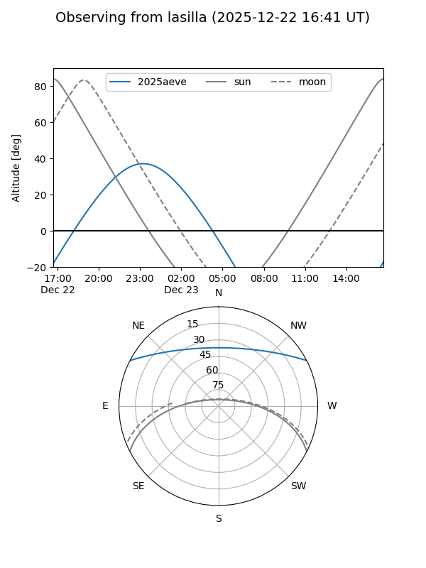
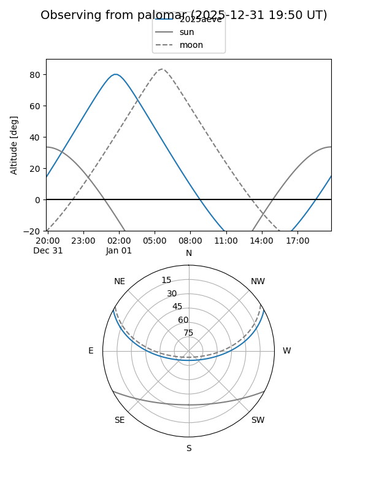
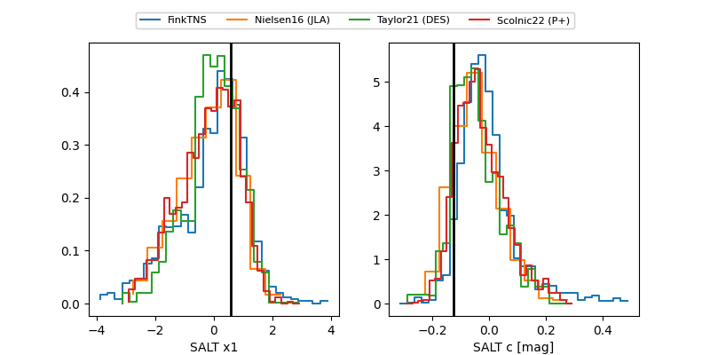

2025aeve
Target 2025aeve at 2025-12-22 14:56
Aliases and brokers:
FINK: fink-portal.org/ZTF25acehwvg
Lasair: lasair-ztf.lsst.ac.uk/objects/ZTF25acehwvg
ALeRCE: alerce.online/object/ZTF25acehwvg
TNS: wis-tns.org/object/2025aeve
YSE: ziggy.ucolick.org/yse/transient_detail/2025aeve
alt names
ZTF25acehwvg (ztf,fink_ztf)
2025aeve (tns,yse)
Coordinates:
equatorial (ra, dec) = 9.1507,+23.43424
equatorial (HMS+DMS) = 00:36:36.17,+23:26:03.25
galactic (l, b) = (118.5326,-39.31076)
Flags:
Photometry:
last ztfg=19.83, ztfr=20.59
3 ztfg, 3 ztfr detections
Lightcurve

Visibility


Additional plots
